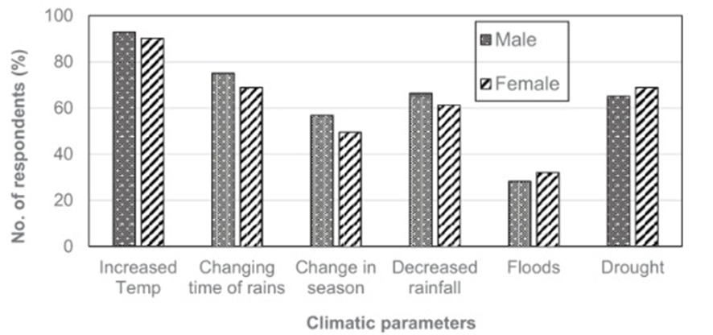
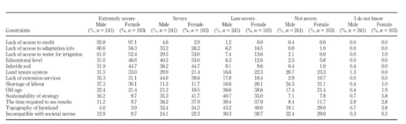

→ Climate Change and Farming Challenges
- Harsh Sunshine: Climate change has made farming difficult, with the sun during the dry season becoming so harsh that it destroys crops, particularly transplanted cocoa and vegetable seedlings.
- Heavy Rainfall: When it rains, the intensity is so high that it washes away young crops, making it hard for them to survive.
- No Harvest Example: In 2018, due to the harsh weather conditions during the dry season, no cocoa harvest was possible (zero yield).
- Reports from Farmers: Both men and women farmers in almost all districts have reported negative climate impacts, which they attribute to losses in their farming activities.
- Extension Officers' Perspective: Extension officers agree with farmers on the severity of the impacts but consider them severe rather than extreme, aligning closer to female farmers' views than male farmers.
- Perception Difference: The difference in perceived impact severity could be due to farmers experiencing direct losses, while extension officers base their observations on field visits and reports from farmers.
→ Climate Impact on Farmers

- Extreme Heat: Most farmers reported experiencing extreme heat, which had a negative impact on their farming activities.
- Flooding Impact: Very few farmers indicated that flooding affected their farming activities significantly.
- Gender Vulnerability: Both men and women are vulnerable to the different categories of climate impact, but in most cases, except floods and droughts, the percentage of men who are vulnerable is higher than that of women.
- Focus Group Discussions: From focus group discussions, both farmers and extension officers agreed that drought had a more devastating impact on their activities compared to flooding.
→ Access to Resources and Extension Services
- Access to Credit: Farmers expressed that increased access to credit would enhance their financial capacity to purchase necessary agrochemicals and fertilizers, enabling them to control pests and diseases and improve soil fertility for higher yields.
- Water for Irrigation: The lack of access to water for irrigation was frequently linked to the degradation of water bodies caused by galamsey (illegal mining activities).
- Inadequate Extension Services: Both farmers and extension officers acknowledged that extension services were insufficient due to a limited number of extension officers available in the districts.
→ Constraints Faced by Farmers

- Top Constraints: The three highest constraints identified by both male and female respondents were:
- 1. Lack of Access to Credit: This was the primary constraint affecting both genders.
- 2. Adaptation Information: Access to relevant adaptation information was critical, but women indicated this as a secondary constraint.
- 3. Water for Irrigation: Access to water for irrigation was also a significant constraint, being the third for women while ranked differently for men.
- Reversal in Constraints: For women, the second and third constraints were the lack of information on adaptation and lack of access to water for irrigation, while for men, the order was reversed.